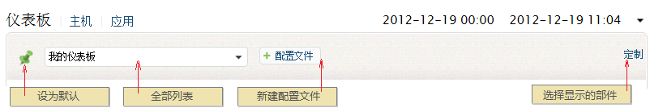
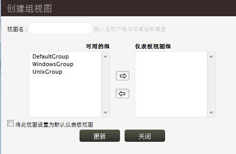
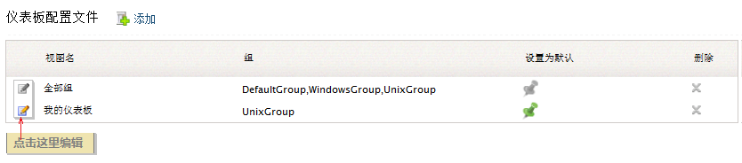

定制仪表板

如何创建仪表板配置文件
在EventLog Analyzer中可以创建基于主机组的仪表板配置文件，点击+ 配置文件按钮。仪表板只显示相关联组中的数据信息。默认的仪表板显示全部主机组，和自定义的仪表板不同，是不可编辑的。
- 通过主页标签 > 仪表板 > + 配置文件 > +添加来创建。
步骤如下：

-
输入配置文件的名称。
-
选择要添加到这个仪表板中的主机组。
-
选中了将此视图设置为默认仪表板视图后，这个新创建的仪表板就成为了默认显示的仪表板。
-
点击更新按钮来保存新创建的仪表板。
如何编辑或删除仪表板配置文件
- 通过主页标签 > 仪表板 > + 配置文件打开所有仪表板配置文件列表视图。
在这里点击相应的图标进行编辑、删除或设置为默认视图。

定制仪表板显示的图表
- 可选择的图表有：所有事件、告警、重要事件、事件分类、安全事件和日志趋势。通过仪表板右上角的定制选择图表。
- 用鼠标拖拽部件来更改其在仪表板中的位置。
|